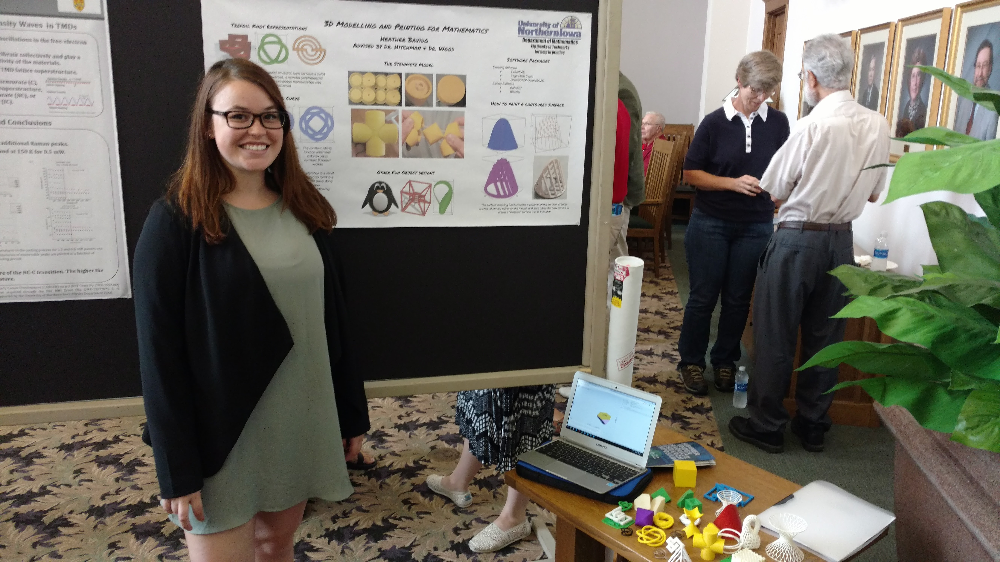

Theron J Hitchman
University of Northern Iowa
 This is Heather Bavido.
Because Heather wanted to print some interesting things, she was motivated to learn about
Can we leverage this bit of technology, and the interface between design, visualization, and spatial reasoning to motivate a program of learning to do mathematics in a creative environment?
A system of ideas about course and lesson design that derives from a constructivist philosophy. IBL classrooms aim for actively engaging the students in sense-making work.
Who is responsible for
Let's just tell the students they can 3D print stuff, and let the math happen as it does.
What are the pitfalls in presenting a truly open-ended situation to undergraduate students?
Where will this likely fail?
IBL courses give us a template for training students to do open-ended work.
My argument derives from experience with
Math 3600: Euclidean Geometry
over the last decade.
Short Version: Lay Traps.
Similarities:
Ask good questions.
Listen Carefully.
Respect students intellect.
You can uncover the mathematics in their work.
If you do it transparently, they pick it up.
...and lead them astray in more serious ways
- theron.hitchman@uni.edu
- The Academy for Inquiry Based Learning